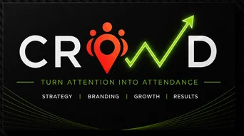

CROWD MARKETINGMany local businesses get website visitors, social engagement, calls, or inquiries but still struggle to attract qualified leads. The problem is that traffic does not automatically create customers. Weak targeting, poor local visibility, unclear offers, low-intent traffic, and ineffective follow-up can break the customer journey before a prospect takes action.
A stronger approach connects search intent with local visibility, customer needs, and a clear conversion experience. Businesses also need to understand their target audience and improve follow-up after each inquiry. This guide explains the common causes of weak lead generation and shows how local businesses can build a more effective system that improves conversion rate and attracts better prospects.
Website visitors create awareness, but they are not automatically leads. An inquiry shows interest, while a qualified lead matches the business’s service and customer criteria. A customer goes further and completes a purchase. Therefore, traffic volume alone cannot show marketing success. Effective lead qualification looks at buyer intent and movement through the conversion funnel.
A strong local lead usually shows:
Businesses can measure lead quality through qualified-lead rate, appointment rate, and lead-to-customer conversion. A CRM can track these metrics and help control customer acquisition cost.
Broad visibility can bring many visitors without attracting the right prospects. Local businesses need to target people based on location, demographics, needs, and search intent. For example, a marketing agency Boca Raton may attract traffic from outside its service area. Relevant visibility matters more than large traffic numbers.
A complete Google Business Profile, strong local SEO, genuine reviews, useful location pages, and consistent business information help businesses appear in relevant searches. Without these signals, competitors may capture high-intent local searches.
Generic messaging gives prospects little reason to respond. Clear consultations, quotes, assessments, special offers, or problem-specific solutions can make an offer more useful and relevant.
Unclear messaging, weak CTAs, long forms, slow loading, poor mobile experiences, and missing trust signals can stop visitors from converting. A focused landing page should make the next step obvious.
Depending only on SEO, paid advertising, social media marketing, or referrals creates risk. Channel choices should reflect actual customer behavior rather than using every available platform.
Delayed responses and inconsistent communication can waste valuable inquiries. A CRM can support lead nurturing, reminders, and organized follow-up. Even qualified leads can disappear when businesses fail to respond consistently.
Search intent shows what a person wants from a query. Informational searches seek answers, commercial searches compare options, transactional searches show readiness to act, and local searches focus on nearby providers. High-intent searches can produce more valuable prospects than keywords with large search volumes but weak buying intent.
Useful content can address pricing questions, service comparisons, common mistakes, local customer concerns, and “near me” decision factors. This helps businesses reach prospects before they are ready to contact a provider.
The search query, ad or content, landing page, and CTA should deliver a consistent message. Clear services, local relevance, trust signals, and simple conversion paths reduce friction.
Businesses should track cost per qualified lead, appointment rate, close rate, customer acquisition cost, and revenue. These metrics reveal which activities generate meaningful business results.
A strong local presence starts with an accurate Google Business Profile, genuine reviews, consistent local citations, useful location pages, and helpful local content. These elements help search engines and customers understand where a business operates and what it offers. A focused digital marketing Boca Raton strategy can also connect local visibility with relevant customer needs.
Prospects often need proof before submitting a form or making a call. Testimonials, case studies, credentials, transparent pricing information, FAQs, and clear service details can reduce uncertainty and strengthen credibility.
Clear CTAs remove confusion and guide visitors toward action. Effective options include:
Fix Conversion Problems Before Buying More Traffic: Audit existing traffic and identify where prospects leave. Improve weak forms, CTAs, page speed, mobile usability, and unclear messaging. Fixing these issues can help convert existing visitors more effectively.
Match Each Channel to Customer Intent: A marketing company Boca Raton can use each channel for a specific purpose (Local SEO for search demand, Paid search for immediate intent, Content for authority, Social media for awareness, and Email/SMS for nurturing).
Leads may not match the audience, search intent, offer, or qualification criteria. Poor follow-up can also cause interested prospects to leave.
Improve local visibility, target relevant search intent, create useful offers, optimize landing pages, and qualify leads before sales follow-up.
They serve different purposes and can work together. The right mix depends on the business, market, sales cycle, and budget.
Reviews provide credibility and help prospects evaluate a business before contacting it or making a purchase decision.
Look for local expertise, transparent reporting, reliable tracking, a clear conversion strategy, and measurable business outcomes.